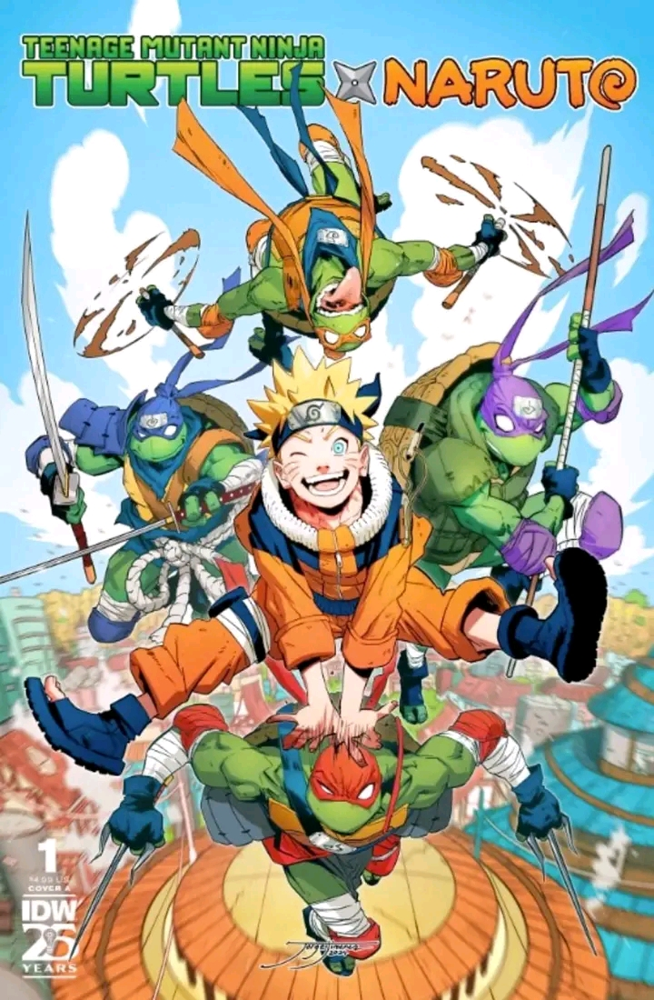

Cristiano Ronaldo é eleito o melhor jogador de todos os tempos
Na terça-feira, Cristiano Ronaldo foi eleito o melhor jogador de todos os tempos pelo jornal mais importante do planeta (o nosso). O craque português provou para todos que, sem dúvidas, é o melhor de todos os tempos.
Pai dos animes!!
NOTÍCIA! Foi anunciado oficialmente que os ninjas mais famosos do mundo, Naruto e as Tartarugas Ninjas irão fazer um crossover em HQ! É isso mesmo! E o lançamento da 1º edição está previsto para chegar em 13 de Novembro de 2024 nos EUA, e este evento só ocorreu graças a uma parceria entre as editoras americanas VIZ Media e a IDW, que irá render em uma série em 4 edições. E juntamente com esse anúncio foi também revelado uma arte em capa, junto com as artes dos personagens. E o crossover está intitulado “Teenage Mutant Ninja Turtles x Naruto ”. Está e a sinopse oficial do crossover: É o confronto ninja mais legal que você poderia ter sonhado, se tivesse ousado! Os Heróis em Meia-Casca encontram o anfitrião da Raposa de Nove Caudas no crossover sobre o qual todos estarão falando. Quando a repórter adolescente April O’Neil tem um encontro clandestino com Tsunade, a líder da Vila Oculta da Folha, isso atrai a atenção de Naruto, Sasuke, Sakura e Kakashi. Eles não são os únicos que estão se perguntando o que as duas mulheres estavam discutindo, no entanto. O sinistro Clã do Pé tem seu próprio interesse na visita de April, pois eles acham que ela pode ter informações valiosas sobre a pesquisa de mutação que está sendo conduzida pelo cientista Baxter Stockman. Com April presa entre as forças da Vila Oculta da Folha e do Clã do Pé, não pode demorar muito para que as Tartarugas Ninja apareçam para lhe dar uma mão!
HIT ME HARD AND SOFT!
Mais uma refei√ß√£o, Billie? üçΩÔ∏è De surpresa, a cantora¬†Billie Eilish¬†liberou em todas as plataformas de música, na madrugada desta quarta-feira (22), um remix in√©dito da faixa ‚ÄúL‚ÄôAMOUR DE MA VIE‚Äù. A can√ß√£o, em sua versão original, integra o disco ‚ÄúHIT ME HARD AND SOFT‚Äù, o terceiro da carreira e fruto de mais uma união com o irmão, Finneas. Com uma est√©tica √† la anos 1980 e uma base que reestrutura todo seu instrumental, a novidade mostra potencial para ocupar as pistas. Já ouviu? O que achou? (üì∑ Divulga√ß√£o) üÜò O Rio Grande do Sul precisa de AJUDA. Doe água potável, itens de higiene, vestuário e cesta básica. As ag√™ncias dos Correios de todo o Brasil estão enviando de gra√ßa at√© o local da trag√©dia. Acesse www.paraquemdoar.com.br, conhe√ßa iniciativas e fa√ßa suas doa√ß√µes.
Coreia
Coreia do Norte O presidente da Coreia do Norte Kim Jon-Un elaborou uma lei que proíbe a transmissão dos jogos de três equipas da Premier League no seu país. Os jogos do Tottenham Hotspurs, Wolverhampton Wanderers e Brentford foram barrados e não voltarão a ser transmitidos na Coreia do Norte. O motivo? Estes três clubes têm jogadores sul coreanos nos seus plantéis.